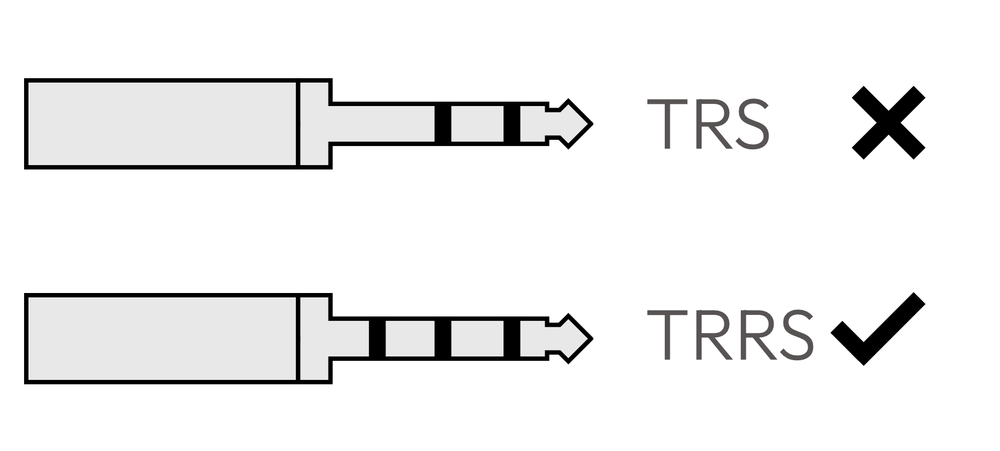

Troubleshooting
Here is a list of the most common problems you may encounter when using silakka54 after assembling.
Random keys do not work after assembling
Check that there are no cold solder joints on the PCBs. Make sure that the diodes are positioned correctly. One reason may also be a twisted pin in the switch. Remove the switch and make sure the pins are straight.
The keyboard works but all keys are flipped
Connect the USB cable to left side, if it's connected to right side, firmware needs to be modified.
The right side of the keyboard does nothing, even when the audio cable is connected.
If you have purchased a pre-built silakka54, they often have very tight TRRS connectors. Ensure that the connector is fully inserted!
Make sure it's a TRRS cable and not a TRS. Many cheap cables are just TRS cables.
I tried googling "silakka", but all I get in the image search are pictures of fish
🐟!